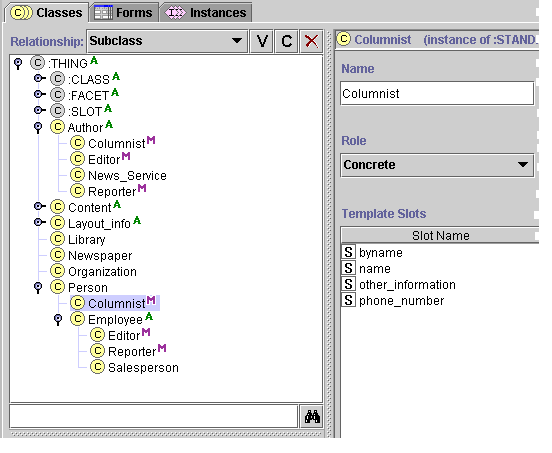
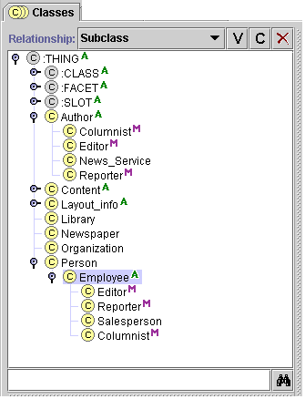

Replacing a Superclass
Replacing a Superclass

You can replace a superclass of a class using drag-and-drop in the Class Relationship pane.
To replace a superclass:
- Select the subclass you want to move
- Hold down the mouse button and drag the subclass on top of the new superclass.
- Release the mouse. The subclass will now be located under the selected superclass. Note that the slots of the dragged class will automatically change to reflect the
inheritance from the new superclass.
The following example shows how to make Columnist inherit from Employee
rather than the class Person.
- Highlight Columnist in the Class
Relationship pane. Because Columnist has more than one superclass, you must make sure to select the copy of Columnist that is
under Employee. (When a class has more than one superclass, you can use
the Superclasses pane to select the copy that you want. See Jumping
to a Different Superclass for more information.) Note that the Slots
information for Columnist reflects the slots it inherits from Person.

- Hold down the mouse button and drag Columnist on top of the new superclass
Employee.
- Release the mouse button to drop the
class. Employee is highlighted and the Class Relationship pane
redisplays to show the new hierarchy. The dragged class and all of
its subclasses are moved from the original superclass to the new superclass.

Notice that if you highlight Columnist after it has been repositioned,
it now has three additional slots. These are the new slots it inherits from Employee.
When you replace the superclass of a class, you will often lose and gain slots.
Next: Adding a Superclass
Classes Table of Contents